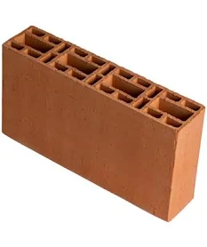

Bloco Cerâmico Estrutural 9x19x39
Descrição do Produto
O Bloco Cerâmico Estrutural 9x19x39 é fabricado com argila de alta qualidade, garantindo resistência e durabilidade para obras de alvenaria estrutural. Suas dimensões padronizadas facilitam o assentamento e otimizam o consumo de argamassa, contribuindo para uma construção mais eficiente e econômica.
Detalhes Técnicos
- Código: BCE-012
- Dimensões: 9cm (Largura) x 19cm (Altura) x 39cm (Comprimento)
- Material: Cerâmica vermelha
- Acabamento: Natural
- Tipo: Estrutural
- Resistência à Compressão: Conforme normas ABNT (especificar valor, ex: ≥ 3 MPa)
- Indicação de Uso: Alvenaria estrutural em edificações residenciais, comerciais e industriais.
- Peças por m² (parede de 9cm): Aproximadamente 12,5 peças
- Unidade de Venda: Milheiro ou Peça